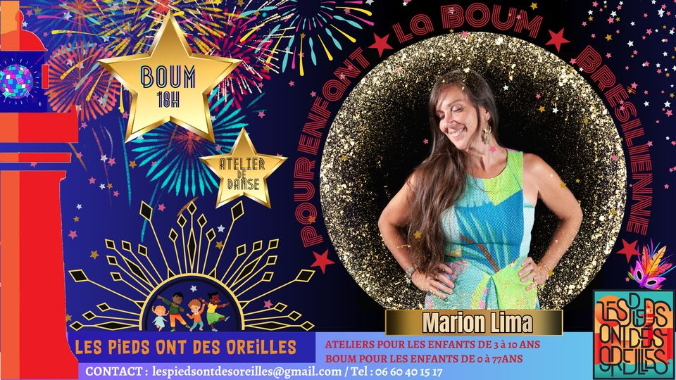

Pour les ENFANTS :💥BOUM et ATELIERS de danses brésiliennes

🎢 Et pourquoi les enfants ne pourraient pas eux aussi avoir une super fête pour commencer l’année🧨 dans la joie et l’allégresse ?
Venez nous rejoindre pour la première édition 🚀 de la boum💥 pour enfants façon Podos🌈✨ !
Préparez-vous pour une explosion de joie et de couleur. Laissez vos enfants découvrir la culture brésilienne à travers une journée bien remplie.
✺LE PROGRAMME
🌞🌺🦜 ATELIER DE DANSE BRÉSILIENNE POUR LES ENFANTS🦜🌺🌞
★★★AVEC MARION LIMA★★★
★13h30-14h30: 🦋✨9 -12 ans
★15h-16h : 🦄✨5-8 ans
★ 16h30-17h30: 🐥🔥atelier d’éveil aux danses brésiliennes
L’objectif avec ces ateliers c’est de faire découvrir aux enfants la diversité et la richesse de la culture brésilienne !
Grâce à notre pétillante Marion Lima, professeur de danse Brésilienne à Paris, vos enfants vont s’initier au Frevo (danse très dynamique et ludique de Carnaval issue de la Capoeira et que se pratique avec des petites ombrelles) au Maracatu (cortège royale, qui défile sur des percussions lors du Carnaval) au côco (qui se danse en tapant du pied par terre) et à la quadrilha (qui se danse principalement à la Saint-Jean et qui est une succession de farandoles, de ronde et de danse collective), ainsi que bien-entendu un peu de Samba !
Dans son approche, Marion est très attentive aux rythmes et aux propositions des enfants, beaucoup de jeux proposés font place à la créativité de chacun.
Bref ça va être très riche et très ludique car ces danses sont vraiment très joyeuses !
🌜🫧🌸💥BOUM💥🌸🫧🌛
★★★18H-20H★★★
🔥DJ FLOW🔥
Flo découvre le forró en 2015 après être tombé sur l’album “Cada um belisca um pouco”. Le coup de foudre est immédiat et depuis il y voue une passion débordante.
Il débute en devenant danseur, puis commence à partager sa collection de musique en 2018 en s’occupant des kiosques Forró parisiens. Très vite, il passe derrière les platines en devenant un des Djs réguliers du Forrobodo où il enflamme la piste de danse avec son style de musique joyeux et festif, qui capture parfaitement l’essence populaire de cette culture.
✺TARIFS
Les ateliers enfants sont à prix libre à partir de 8€ (juste prix 10€)
🦖Réservation OBLIGATOIRE car le nombre de place est limité.
La BOUM est au tarif unique de 5€/pers.
✺LES LIEUX
Les stages : Salle de danse des Hibiscus, rue des Hibiscus. 44600 Saint Nazaire.
La Boum : Salle Kerfaouët. Rue des Pinsons. Villès Martin. 44600 Saint-Nazaire.